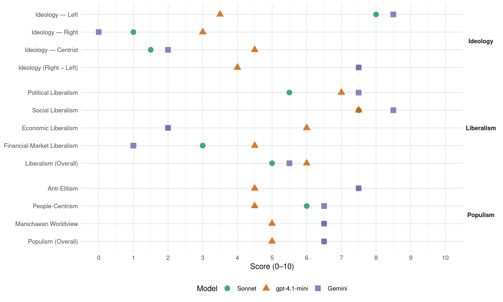

PRC (Italy, 1994)
manifesto_id 32212_199403
Get full text: This site shows derived annotations and short verbatim quotes only. The full manifesto text is © Manifesto Project / WZB — obtain it via manifesto-project.wzb.eu using the manifesto_id above.
Headline scores
| Dimension | Sonnet | gpt-4.1-mini | Gemini |
|---|---|---|---|
| Populism (Overall) | 6.5 | 5.0 | 6.5 |
| Anti-Elitism | 7.5 | 4.5 | 7.5 |
| People-Centrism | 6.0 | 4.5 | 6.5 |
| Manichaean Worldview | 6.5 | 5.0 | 6.5 |
| Ideology (Right − Left) | 7.5 | 4.0 | 7.5 |
| Liberalism (Overall) | 5.0 | 6.0 | 5.5 |
| Political Liberalism | 5.5 | 7.0 | 7.5 |
| Social Liberalism | 7.5 | 7.5 | 8.5 |
| Economic Liberalism | 2.0 | 6.0 | 2.0 |
| Financial-Market Liberalism | 3.0 | 4.5 | 1.0 |
Evidence per dimension
Economic Liberalism
Gemini · score 2.0 · verified · chunk 1
“vanno esclusi da privatizzazioni settori fondamentali”
Per tutte queste ragioni “vanno esclusi da privatizzazioni settori fondamentali” quali formazione, scuola, sanità e banche.
Gemini · score 4.0 · mixed · chunk 2
“reale ed efficace disciplina anti-trust”
Bisognerà poi ridisegnare l’intera mappa delle concessioni, sulla base di una reale ed efficace disciplina anti-trust, non aggirabile con un fratello
gpt-4.1-mini · score 5.0 · verified · chunk 1
“mercato trionfante riesce solo apparentemente a risolvere i problemi dell’economia”
Il mercato trionfante riesce solo apparentemente a risolvere i problemi dell’economia. La logica atomistica, individuale e immediata, del profitto è incapace di percepire i valori d’uso, l’enorme quantità del lavoro di cura,
gpt-4.1-mini · score 7.0 · verified · chunk 2
“intervenendo sulla distribuzione della pubblicità e sulle tariffe postali”
Va quindi spezzato il regime di duopolio in campo radiotelevisivo attualmente in atto, mentre, con opportuni sostegni e d»vieti di concentrazione di testate, va rilanciata la piccola editoria e l’informazione a mezzo carta stampata, intervenendo sulla distribuzione della pubblicità e sulle tariffe postali.
Sonnet · score 2.0 · verified · chunk 1
“vanno esclusi da privatizzazioni settori fondamentali”
Per tutte queste ragioni vanno esclusi da privatizzazioni settori fondamentali (quali formazione, sistema scolastico, grandi comunicazioni di massa, sanità, servizi sociali, e alcuni fattori strategici della produzione e del sistema bancario)
Sonnet · score 5.0 · mixed · chunk 2
“sostanziale concorrenza imprenditoriale”
Per assicurare un reale pluralismo di voci e una sostanziale concorrenza imprenditoriale, bisogna fissare un tetto
Financial-Market Liberalism
Gemini · score 1.0 · verified · chunk 1
“controllo sui movimenti di capitali speculativi”
Esige anche un “controllo sui movimenti di capitali speculativi”, come condizione indispensabile alla politica fiscale.
gpt-4.1-mini · score 3.0 · verified · chunk 1
“finanziarizzazione lesiva della stessa tenuta delle attività industriali”
problema agrario appare oggi come grande questione nazionale perché da qui può articolarsi, in forme nuove ed avanzate, una strategia per una qualità diversa dello sviluppo, dì nuovi rapporti internazionali, la modifica del mercato interno, dei consumi, della qualità della vita, la difesa del territorio e dell’ambiente naturale. Si acutizzano a livello internazionale, in particolare tra Europa e Usa scontri e contrasti profondi che investono problemi nodali ed in particolare: il controllo delle bio-diversità, la genetica e le diversità produttive di ogni singolo Paese; il dominio dei mercati e del commercio mondiale; le qualità produttive e il loro controllo fino alla manipolazione dell’intera rete distributiva con tutto quello che significa sui consumi finali e la loro qualità. Le strategie della Politica Agricola Comunitaria, accettate supinamente da! governo italiano, sono in realtà decise e dominate da Germania, Francia e Olanda. La riforma della politica agricola parte da” un presupposto che dimostra tutta la profondità delle contraddizioni che si sono aperte in Europa. I paesi europei accumulano grandi eccedenze in tutti i comparti delle produzioni agroalimentari. Da questa situazione nasce la nuova Politica Agricola Comunitaria (PAC) con l’intenzione di ridurre fortemente alcune produzioni strategiche: cereali, piante oliginose, latte. Essendo però il parametro la quantità e non la qualità ne deriva una penalizzazione per le produzioni mediterranee, tale da emarginare ancora di più il comparto agricolo nazionale, subordinandolo interamente alle produzioni, mercato interno compreso, dei paesi europei più forti. Emblematica è stata la vicenda delle quote per il latte. L’Italia, che consuma oltre 18 milioni di tonnellate ogni anno, deve produrre non più di 9 milioni di tonnellate, metà del proprio fabbisogno interno, acquistare latte scadente dai paesi eccedentari i quali producono tutti (Germania, Francia, Olanda) dal 2% al 3.5% in più rispetto a quanto sono in grado di consumare. Solo questo comparto, rimodellato secondo i regolamenti comunitari, comporterà un colpo gravissimo all’agricoltura italiana, un ulteriore ridimensionamento dei patrimonio zootecnico (dovranno essere abbattuti 500.000 capi di bestiame da latte), dell’occupazione con la chiusura di migliaia di aziende soprattutto nelle aree interne collinari e montane, della tutela del territorio e dell’ambiente naturale. Ma è tutta la nostra produzione agroalimentare ad essere sempre più emarginata nel contesto europeo e anche in quello del mercato interno per il fatto (a cominciare dalla privatizzazione delta SME) che le grandi concentrazioni finanziarie conquistano sempre più spazi nella rete distributiva imponendo al consumo i loro prodotti. L’assenza di una capacità di governo della politica agricola nazionale ha finito per produrre guasti gravissimi in tutto il Paese. A questo si è aggiunta la gestione clientelare della Federconsorzi, dell’Aima, degli enti e strumenti con i quali sono state canalizzate enormi risorse. Questa carenza si accentua oggi per le conseguenze della PAC e per il fatto che dopo l’abrogazione del Ministero dell’Agricoltura a seguito del referendum, vige la massima confusione su come riorganizzare una strategia di governo dell’agricoltura, quale ruolo affidare alle Regioni, di quali obiettivi dotarsi. Il rilancio della nostra agricoltura è indispensabile sia ai fini occupazionali che per garantire l’autosufficienza del nostro paese per gli approvvigionamenti. Questo richiede la rinegoziazione della PAC con una forte iniziativa del nostro paese e delle Regioni per ottenere il pieno riconoscimento delle nostre diversità produttive e su questa base, non sulla quantità, rimodellare il mercato comune europeo. In questo senso va valorizzata l’agricoltura di pregio delle aree interne collinari e montane, Va riorganizzato il mercato agroalimentare interno collegandolo strettamente alle nostre tipicità produttive in modo che al tempo stesso riqualifichi - i consumi, compresa la qualità dell’alimentazione. Va promossa l’utilizzazione di parte del suolo agricolo, anche come occasione di formazione di nuovo reddito, per incentivare produzioni non alimentari direttamente collegate al settore energetico. L’ambiente va considerato come una risorsa indispensabile per l’occupazione e lo sviluppo. Ma ciò richiede una radicale inversione rispetto al modello seguito in questi decenni e appoggiato dai vari governi, compreso quello di Ciampi. Si tratta di operare essenzialmente in due direzioni: - porre fine a scelte devastanti per l’ambiente e assai scarsamente produttive per l’economia del Paese. - impostare una vera riconversione ecologica e la promozione di nuova economia ambientale che determini effetti positivi per l’occupazione. Vanno quindi respinti progetti quali la centrale di Gioia Tauro, l’Alta Velocità ferroviaria, il raddoppio autostradale Firenze/Bologna. Va invece affidata priorità alla realizzazione di un piano di occupazione ambientale. così come contenuto nelle proposte di associazioni quali Legambiente. L’occupazione ambientale è una delle risposte da dare a una disoccupazione che ha caratteri strutturali e che è il frutto tra l’altro di una ormai avvenuta disgiunzione tra crescita e occupazione. Un piano per l’occupazione ambientale deve rivolgersi contemporaneamente all’esigenza di un risanamento degli ambiti degradati, alla conversione ecologica dei settori produttivi, all’avvio di economie ecologiche. Un tale piano va adeguatamente finanziato con due canali possibili: il recupero dei finanziamenti tolti ad opere distruttive; una riforma del sistema fiscale che sposti il peso del prelievo sugli sprechi di risorse alleggerendolo sul lavoro dipendente. Naturalmente una politica per l’ambiente richiede un insieme di provvedimenti coordinati. Occorrono leggi e piani finanziati per la conversione dei principali settori produttivi e infrastrutturali. Una conversione industriale che bonifichi le industrie a rischio e inquinanti; promuova innovazione di ciclo e di prodotto, fondandosi sul risparmio energetico, l’integrazione e la chiusura di cicli, la qualificazione merceologica. Una conversione agricola che premi la qualità e riduca drasticamente l’abuso della chimica, Una nuova politica dei trasporti che privilegi il trasporto pubblico non inquinante, sposti consistenti quote di merci dalla gomma alla rotaia, riequilibri gli assi di attraversamento della penisola, rilanci con forza il cabotaggio marino. Una nuova politica energetica fondate su risparmio, fonti alternative e sull’ottimizzazione ambientale degli impianti esistenti. Una politica del territorio con una legge sul regime dei suoli che sancisca finalmente l’indirizzo pubblico sulle AREE E ponga fine all’urbanistica contrattata; un piano di difesa del suolo fondato sulla gestione e non sulle opere; l’attuazione della legge sui parchi; un piano di riqualificazione della città. Lo sviluppo delle competenze tecnico-scientifiche, dei controlli e della ricerca è poi elemento decisivo per una nuova qualità della programmazione. Occorre un ruolo attivo dell’Italia nelle politiche europee e mondiali per l’ambiente, adoperandosi attivamente non sono per il recepimento e il rispetto degli accordi di Rio e per la predisposizione di nuovi impegni di salvaguardia della biosfera a partire dall’ozono, ma soprattutto per una politica che rinnovi quei profondi squilibri che sono causa prima dei dissesti ambientali.
gpt-4.1-mini · score 6.0 · verified · chunk 2
“ristrutturazione, finanziaria e tecnologica, che sta trasformando il mercato internazionale”
Ma al di là dell’ambito strettamente nazionale, il vero rischio per il sistema informativo italiano viene dalia ristrutturazione, finanziaria e tecnologica, che sta trasformando il mercato internazionale. Obbiettivo e strumento della guerra stellare che si sta combattendo fra i grandi gruppi multimediali è il satellite.
Sonnet · score 2.0 · verified · chunk 1
“controllo sui movimenti di capitali speculativi”
Esige anche un controllo sui movimenti di capitali speculativi, come condizione indispensabile alla realizzazione di una autonoma politica fiscale e di bilancio
Sonnet · score 4.0 · verified · chunk 2
“ristrutturazione, finanziaria e tecnologica”
il vero rischio per il sistema informativo italiano viene dalla ristrutturazione, finanziaria e tecnologica, che sta trasformando il mercato internazionale
Political Liberalism
Gemini · score 8.0 · verified · chunk 1
“pieno diritto di voto a tutti i”
una legge universale capace di garantire il “pieno diritto di voto a tutti i” dipendenti per l’elezione dei rappresentanti.
Gemini · score 7.0 · verified · chunk 2
“conferimento di poteri reali di controllo alla Commissione parlamentare”
trasparenza assoluta dei bilanci; conferimento di poteri reali di controllo alla Commissione parlamentare sui servizi di sicurezza.
gpt-4.1-mini · score 7.0 · verified · chunk 1
“difesa del sistema democratico coincide con il suo allargamento”
La difesa del sistema democratico coincide con il suo allargamento. E’ quindi necessario ridisegnare i confini e i rapporti tra democrazia diretta e democrazia rappresentativa, rendere trasparenti e democraticamente utilizzabili le pubbliche istituzioni,
gpt-4.1-mini · score 7.0 · verified · chunk 2
“valore dell’ari. 18 della Costituzione che fa divieto alle associazioni SEGRETE DI ESISTERE”
Va ribadito il valore dell’ari. 18 della Costituzione che fa divieto alle associazioni SEGRETE DI ESISTERE E QUINDI VA RICOSTITUITA LA COMMISSIONE parlamentare di inchiesta sulla loggia P2, dotandola di poteri di inchiesta sulla penetrazione nell’economia e nella politica dei poteri occulti e delle associazioni segrete.
Sonnet · score 5.0 · verified · chunk 1
“piena indipendenza della Magistratura”
dalla garanzia della piena indipendenza della Magistratura per garantire ai cittadini giustizia ed efficacia nella lotta contro la corruzione
Sonnet · score 6.0 · verified · chunk 2
“sorti democratiche del nostro paese”
è un tema immediato di scontro su cui si giocano buona parte delle sorti democratiche del nostro paese
Liberalism (Overall)
Gemini · score 5.0 · verified · chunk 1
“vanno esclusi da privatizzazioni settori fondamentali”
Il testo mostra un forte orientamento pro-diritti civili e politici, ma è radicalmente anti-liberale in economia e finanza.
Gemini · score 6.0 · verified · chunk 2
“reale ed efficace disciplina anti-trust”
Bisognerà poi ridisegnare l’intera mappa delle concessioni, sulla base di una reale ed efficace disciplina anti-trust, non aggirabile con un fratello
gpt-4.1-mini · score 5.0 · verified · chunk 1
“difesa del sistema democratico coincide con il suo allargamento”
La difesa del sistema democratico coincide con il suo allargamento. E’ quindi necessario ridisegnare i confini e i rapporti tra democrazia diretta e democrazia rappresentativa, rendere trasparenti e democraticamente utilizzabili le pubbliche istituzioni,
gpt-4.1-mini · score 7.0 · verified · chunk 2
“valore dell’ari. 18 della Costituzione che fa divieto alle associazioni SEGRETE DI ESISTERE”
Va ribadito il valore dell’ari. 18 della Costituzione che fa divieto alle associazioni SEGRETE DI ESISTERE E QUINDI VA RICOSTITUITA LA COMMISSIONE parlamentare di inchiesta sulla loggia P2, dotandola di poteri di inchiesta sulla penetrazione nell’economia e nella politica dei poteri occulti e delle associazioni segrete.
Sonnet · score 4.0 · verified · chunk 1
“difendere, riformare ed estendere lo stato sociale”
bisogna difendere, riformare ed estendere lo stato sociale respingendo la falsa alternativa burocratismo-privatizzazione
Sonnet · score 6.0 · verified · chunk 2
“formazione rigorosamente democratica”
di garanzia dello sviluppo di un sapere autonomo, di una formazione rigorosamente democratica
Anti-Elitism
Gemini · score 8.0 · verified · chunk 1
“populismo asservito ai potenti, ai protagonisti”
Il testo si apre criticando il “populismo asservito ai potenti, ai protagonisti del vecchio sistema capitalistico” e la destra.
Gemini · score 7.0 · verified · chunk 2
“modelli di consumo e moduli comportamentali che hanno offerto solide basi di massa prima al CAF”
Berlusconi ha potuto infatti imporre, attraverso la spirale pubblicità - televisione - grande distribuzione, modelli di consumo e moduli comportamentali che hanno offerto solide basi di massa prima al CAF e poi a quella sorta di reaganismo all’italiana
gpt-4.1-mini · score 2.0 · verified · chunk 1
“populismo asservito ai potenti, ai protagonisti del vecchio sistema capitalistico”
populismo asservito ai potenti, ai protagonisti del vecchio sistema capitalistico. Lega, Msi, Forza Italia sono i rappresentanti di questa nuova destra, che ha trovato in Berlusconi.
gpt-4.1-mini · score 7.0 · verified · chunk 2
“penetrazione nell’economia e nella politica dei poteri occulti”
ricostituita la commissione parlamentare di inchiesta sulla loggia P2, dotandola di poteri di inchiesta sulla penetrazione nell’economia e nella politica dei poteri occulti e delle associazioni segrete. Vanno definite norme di legge che impediscano l’appartenenza a società segrete o occulte e a logge massoniche dei pubblici dipendenti dello Stato.
Sonnet · score 8.0 · verified · chunk 1
“garantire il potere di pochi, reprimendo con ogni mezzo”
spingere la diseguaglianza sociale fino all’estremo, mettere a repentaglio la stessa unità nazionale, per ’garantire il potere di pochi, reprimendo con ogni mezzo i bisogni e le aspirazioni della stragrande maggioranza
Sonnet · score 7.0 · verified · chunk 2
“concentrazione di poteri anomala, che oggi mira addirittura a farsi stato”
squilibrandolo con una concentrazione di poteri anomala, che oggi mira addirittura a farsi stato. Dall’altra il nostro paese
Ideology — Centrist
Gemini · score 2.0 · verified · chunk 1
“nuovo centrismo di stampo moderato da”
Il tentativo di rilancio di un “nuovo centrismo di stampo moderato da” parte della ex Dc appare debole e in continuità.
gpt-4.1-mini · score 3.0 · verified · chunk 1
“tentativo di rilancio di un nuovo centrismo di stampo moderato da parte della ex De - oggi Partito Popolare”
Il tentativo di rilancio di un nuovo centrismo di stampo moderato da parte della ex De - oggi Partito Popolare - di Segni, di La Malfa, di Amato appare non solo debole, ma in sostanziale continuità con il vecchio sistema,
gpt-4.1-mini · score 6.0 · verified · chunk 2
“regime di duopolio in campo radiotelevisivo attualmente in atto”
Va quindi spezzato il regime di duopolio in campo radiotelevisivo attualmente in atto, mentre, con opportuni sostegni e d»vieti di concentrazione di testate, va rilanciata la piccola editoria e l’informazione a mezzo carta stampata, intervenendo sulla distribuzione della pubblicità e sulle tariffe postali.
Sonnet · score 1.0 · verified · chunk 1
“tentativo di rilancio di un nuovo centrismo”
Il tentativo di rilancio di un nuovo centrismo di stampo moderato da parte della ex De - oggi Partito Popolare - di Segni, di La Malfa, di Amato appare non solo debole
Sonnet · score 2.0 · verified · chunk 2
“reale pluralismo di voci”
Per assicurare un reale pluralismo di voci e una sostanziale concorrenza imprenditoriale
Ideology — Left
Gemini · score 9.0 · verified · chunk 1
“carattere della ristrutturazione capitalistica ha indotto”
negli elementi di insicurezza che il “carattere della ristrutturazione capitalistica ha indotto” negli stessi ceti popolari.
Gemini · score 8.0 · verified · chunk 2
“contrastare un processo di privatizzazione del sapere”
senza contrastare un processo di privatizzazione del sapere individuale e collettivo che investe tutte le attività della cultura
gpt-4.1-mini · score 2.0 · verified · chunk 1
“schieramento unitario delle forze di sinistra e di progresso”
Per questo è decisivo che sia sceso in campo uno schieramento unitario delle forze di sinistra e di progresso, che il Partito detta Rifondazione Comunista ha contribuito a costruire, in sintonia con la crescita di forti movimenti di massa,
gpt-4.1-mini · score 5.0 · verified · chunk 2
“modelli di consumo e moduli comportamentali che hanno offerto solide basi di massa”
Berlusconi ha potuto infatti imporre, attraverso la spirale pubblicità - televisione - grande distribuzione, modelli di consumo e moduli comportamentali che hanno offerto solide basi di massa prima al CAF e poi a quella sorta di reaganismo all’italiana che lo stesso Berlusconi oggi spera di trasformare in affermazione elettorale.
Sonnet · score 9.0 · verified · chunk 1
“redistribuendo le scarse risorse di lavoro”
anzitutto redistribuendo le scarse risorse di lavoro tra più persone, con una drastica e generalizzata riduzione dell’orario di lavoro a parità di retribuzione
Sonnet · score 7.0 · verified · chunk 2
“intervento pubblico a sostegno e promozione delle attività culturali”
va contrapposta una linea che privilegi l’intervento pubblico a sostegno e promozione delle attività culturali sia produttive
Ideology (Right − Left)
Gemini · score 8.0 · verified · chunk 1
“carattere della ristrutturazione capitalistica ha indotto”
Il testo esprime un populismo di sinistra radicale contro la ristrutturazione capitalistica e i ceti dominanti.
Gemini · score 7.0 · verified · chunk 2
“contrastare un processo di privatizzazione del sapere”
senza contrastare un processo di privatizzazione del sapere individuale e collettivo che investe tutte le attività della cultura
gpt-4.1-mini · score 3.0 · verified · chunk 1
“Lega, Msi, Forza Italia sono i rappresentanti di questa nuova destra”
populismo asservito ai potenti, ai protagonisti del vecchio sistema capitalistico. Lega, Msi, Forza Italia sono i rappresentanti di questa nuova destra, che ha trovato in Berlusconi.
gpt-4.1-mini · score 5.0 · verified · chunk 2
“regime di duopolio in campo radiotelevisivo attualmente in atto”
Va quindi spezzato il regime di duopolio in campo radiotelevisivo attualmente in atto, mentre, con opportuni sostegni e d»vieti di concentrazione di testate, va rilanciata la piccola editoria e l’informazione a mezzo carta stampata, intervenendo sulla distribuzione della pubblicità e sulle tariffe postali.
Sonnet · score 9.0 · verified · chunk 1
“schieramento unitario delle forze di sinistra”
è decisivo che sia sceso in campo uno schieramento unitario delle forze di sinistra e di progresso, che il Partito della Rifondazione Comunista ha contribuito a costruire
Sonnet · score 6.0 · verified · chunk 2
“privatizzazione del sapere individuale e collettivo”
senza contrastare un processo di privatizzazione del sapere individuale e collettivo che investe tutte le attività
Ideology — Right
Gemini · score 0.0 · verified · chunk 1
“xenofobi e razzisti, che peraltro vengono”
non si è riusciti a fronteggiare atteggiamenti “xenofobi e razzisti, che peraltro vengono” apertamente eccitati dalla destra.
gpt-4.1-mini · score 3.0 · verified · chunk 1
“Lega, Msi, Forza Italia sono i rappresentanti di questa nuova destra”
populismo asservito ai potenti, ai protagonisti del vecchio sistema capitalistico. Lega, Msi, Forza Italia sono i rappresentanti di questa nuova destra, che ha trovato in Berlusconi.
Sonnet · score 1.0 · verified · chunk 1
“xenofobi e razzisti, che peraltro vengono apertamente”
non si è riusciti a fronteggiare atteggiamenti xenofobi e razzisti, che peraltro vengono apertamente eccitati dallo schieramento di destra
Sonnet · score 1.0 · verified · chunk 2
“società multietnica e multiculturale”
alla prospettiva della creazione di una società multietnica e multiculturale, capace di valorizzare tutte le differenze
Manichaean Worldview
Gemini · score 7.0 · verified · chunk 1
“garantire il potere di pochi, reprimendo”
rivela la sostanza delle loro reali intenzioni: “garantire il potere di pochi, reprimendo” con ogni mezzo la maggioranza.
Gemini · score 6.0 · verified · chunk 2
“perdurante azione eversiva della Legge Mammì”
Questo quadro appare particolarmente compromessa ne! settore televisivo, dove la perdurante azione eversiva della Legge Mammì ha assicurato ad un unico soggetto privato il controllo
gpt-4.1-mini · score 3.0 · verified · chunk 1
“garantire il potere di pochi, reprimendo con ogni mezzo i bisogni e le aspirazioni della stragrande maggioranza”
spingere la diseguaglianza sociale fino all’estremo, mettere a repentaglio la stessa unità nazionale, per ’garantire il potere di pochi, reprimendo con ogni mezzo i bisogni e le aspirazioni della stragrande maggioranza.
gpt-4.1-mini · score 7.0 · verified · chunk 2
“azione eversiva della Legge Mammì ha assicurato ad un unico soggetto privato il controllo”
Questo quadro appare particolarmente compromessa ne! settore televisivo, dove la perdurante azione eversiva della Legge Mammì ha assicurato ad un unico soggetto privato il controllo di frequenze pubbliche e risorse pubblicitarie in misura che non trova paragoni con alcun paese del mondo.
Sonnet · score 7.0 · verified · chunk 1
“pericolo di destra ed aprire la porta”
La vittoria nelle prossime elezioni dei Progressisti è condizione indispensabile per bloccare il pericolo di destra ed aprire la porta dell’alternativa di governo
Sonnet · score 6.0 · verified · chunk 2
“lotta per un’informazione pulita”
9. L’INFORMAZIONE PULITA. La lotta per un’informazione pulita è un tema immediato di scontro
People-Centrism
Gemini · score 7.0 · verified · chunk 1
“bisogni e le aspirazioni della stragrande maggioranza”
reprimendo con ogni mezzo i “bisogni e le aspirazioni della stragrande maggioranza” a favore del potere di pochi.
Gemini · score 6.0 · verified · chunk 2
“hanno già inciso in profondità nel tessuto popolare”
televisione commerciale monopolista nel nostro paese si è costituito un intreccio di interessi e aggregazioni sociali che hanno già inciso in profondità nel tessuto popolare. Berlusconi ha potuto infatti imporre
gpt-4.1-mini · score 3.0 · verified · chunk 1
“bisogna condurre una battaglia sul terreno politico-culturale per affermare una società multietnica e multiculturale”
Bisogna perciò condurre una battaglia sul terreno politico-culturale per affermare una società multietnica e multiculturale e un nuovo concetto di cittadinanza, basato su una nuova definizione del rapporto fra popolo e territorio.
gpt-4.1-mini · score 6.0 · verified · chunk 2
“modelli di consumo e moduli comportamentali che hanno offerto solide basi di massa”
Berlusconi ha potuto infatti imporre, attraverso la spirale pubblicità - televisione - grande distribuzione, modelli di consumo e moduli comportamentali che hanno offerto solide basi di massa prima al CAF e poi a quella sorta di reaganismo all’italiana che lo stesso Berlusconi oggi spera di trasformare in affermazione elettorale.
Sonnet · score 7.0 · verified · chunk 1
“ridare voce e quindi potere alla gente”
Bisogna in primo luogo ridare voce e quindi potere alla gente, ai movimenti, alle associazioni, ai momenti di vita organizzata e collettiva
Sonnet · score 5.0 · verified · chunk 2
“tessuto popolare”
che hanno già inciso in profondità nel tessuto popolare. Berlusconi ha potuto infatti imporre
Populism (Overall)
Gemini · score 7.0 · verified · chunk 1
“populismo asservito ai potenti, ai protagonisti”
Il testo critica il “populismo asservito ai potenti, ai protagonisti del vecchio sistema” per proporre un’alternativa popolare.
Gemini · score 6.0 · verified · chunk 2
“hanno già inciso in profondità nel tessuto popolare”
televisione commerciale monopolista nel nostro paese si è costituito un intreccio di interessi e aggregazioni sociali che hanno già inciso in profondità nel tessuto popolare. Berlusconi ha potuto infatti imporre
gpt-4.1-mini · score 3.0 · verified · chunk 1
“populismo asservito ai potenti, ai protagonisti del vecchio sistema capitalistico”
populismo asservito ai potenti, ai protagonisti del vecchio sistema capitalistico. Lega, Msi, Forza Italia sono i rappresentanti di questa nuova destra, che ha trovato in Berlusconi.
gpt-4.1-mini · score 7.0 · verified · chunk 2
“penetrazione nell’economia e nella politica dei poteri occulti”
ricostituita la commissione parlamentare di inchiesta sulla loggia P2, dotandola di poteri di inchiesta sulla penetrazione nell’economia e nella politica dei poteri occulti e delle associazioni segrete. Vanno definite norme di legge che impediscano l’appartenenza a società segrete o occulte e a logge massoniche dei pubblici dipendenti dello Stato.
Sonnet · score 7.0 · verified · chunk 1
“i rappresentanti di questa nuova destra”
Lega, Msi, Forza Italia sono i rappresentanti di questa nuova destra, che ha trovato in Berlusconi e nel suo strapotere televisivo, il suo nuovo capo
Sonnet · score 6.0 · verified · chunk 2
“Berlusconi ha potuto infatti imporre”
nel tessuto popolare. Berlusconi ha potuto infatti imporre, attraverso la spirale pubblicità - televisione - grande distribuzione
Social Liberalism